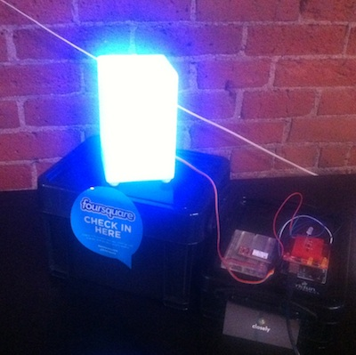

About
Glowsquare provides real-time visualization of Foursquare activity and events using Arduino-based hardware. Trending check-ins in a user selected vicinity are ranked and trigger the GlowSquare to emit a full spectrum of color. High intensity LEDs mean you'll be sure to know when things are jumping around you. Individual check-ins to a selected list of venues cause the Glowsquare to pulse.
Project Team
- Brian Erickson (@djbriane)
- Brian Doyle (@brian_doyle)
- Ward Penney (@wardpenney)
- Tom Bender (@tommybender)
- Kendra Wiig (@DowntownDTown)
- Perry Evans (@perryevans)
- Jeff Davenport (@jeffdavs)
How it Works
Glowsquare monitors the Foursquare API for check-ins around the configured venue and displays the current activity level. Activity level is represented by a constant blue hue with increasing intensity according to the number of check-ins.
Glowsquare utilizes the new venue push API to receive notifications whenever someone checks in at the configured venue. When a new event is detected, a pulse will be generated indicating the action taken (check-in, shout, tip, photo, etc.). For example, when someone checks in to the venue the Glowsquare will briefly pulse with a pink glow then go back to displaying the current activity level.
